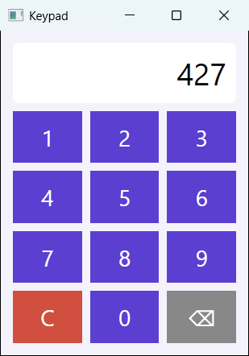

WPF layout and styles
WPF windows arrange themselves. This lesson uses a Grid with rows and columns, a Style that gives every button the same look, and a keypad whose keys are made in a loop.
What you will learn#
- the
Gridand its row and column definitions (Auto,*), Grid.Row,Grid.Column,Grid.ColumnSpan,- resources and styles,
- building XAML with a loop,
- many events with one function.
Layout in WPF#
WPF does not use pixel positions. A panel arranges its children:
| Panel | Arrangement |
|---|---|
StackPanel | one after another, vertically or horizontally |
Grid | rows and columns |
DockPanel | edges and a rest |
WrapPanel | like text: wraps to the next line |
Canvas | exact positions |
The window can be resized and everything follows. The Grid is the most useful: you divide the space and put each element into a cell.
The program#
# WPF layout and styles - Grid, resources, a Style for all buttons, a keypad
load "dotnet.ring"
using {
"System.Windows"
"System.Windows.Controls"
"System.Windows.Controls.Primitives"
"System.Windows.Media"
"System.Windows.Data"
"System"
}
oWindow = ""
oDisplay = ""
cEntered = ""
func main
# The window: a Grid with a display row on top and a keypad below.
# - Grid.RowDefinitions / ColumnDefinitions divide the space: "Auto" = as big as the content, "*" = share what is left
# - Window.Resources holds a Style: every Button inside gets the same look without repeating it
cXaml = '<Window xmlns="http://schemas.microsoft.com/winfx/2006/xaml/presentation" xmlns:x="http://schemas.microsoft.com/winfx/2006/xaml" Title="Keypad" Width="260" Height="360" Background="#F4F2FB">'
cXaml += '<Window.Resources>'
cXaml += '<Style TargetType="Button"><Setter Property="Margin" Value="4"/><Setter Property="FontSize" Value="22"/>'
cXaml += '<Setter Property="Background" Value="#5B3FD1"/><Setter Property="Foreground" Value="White"/><Setter Property="BorderThickness" Value="0"/></Style>'
cXaml += '</Window.Resources>'
cXaml += '<Grid Margin="8"><Grid.RowDefinitions><RowDefinition Height="Auto"/><RowDefinition Height="*"/><RowDefinition Height="*"/><RowDefinition Height="*"/><RowDefinition Height="*"/></Grid.RowDefinitions>'
cXaml += '<Grid.ColumnDefinitions><ColumnDefinition Width="*"/><ColumnDefinition Width="*"/><ColumnDefinition Width="*"/></Grid.ColumnDefinitions>'
cXaml += '<Border Grid.Row="0" Grid.ColumnSpan="3" Background="White" CornerRadius="6" Margin="4" Padding="10"><TextBlock x:Name="display" FontSize="30" HorizontalAlignment="Right" Text="0"/></Border>'
# the buttons 1-9 in three rows, then 0 and two special keys
for nIndex = 1 to 9
nRow = floor((nIndex - 1) / 3) + 1
nColumn = (nIndex - 1) % 3
cXaml += '<Button x:Name="key' + nIndex + '" Grid.Row="' + nRow + '" Grid.Column="' + nColumn + '" Content="' + nIndex + '"/>'
next
cXaml += '<Button x:Name="clear" Grid.Row="4" Grid.Column="0" Content="C" Background="#D14F3F"/>'
cXaml += '<Button x:Name="key0" Grid.Row="4" Grid.Column="1" Content="0"/>'
cXaml += '<Button x:Name="back" Grid.Row="4" Grid.Column="2" Content="⌫" Background="#888888"/>'
cXaml += '</Grid></Window>'
oWindow = wpfXaml(cXaml)
oDisplay = wpfFind(oWindow,"display")
# events: the same function for every digit key
for nIndex = 0 to 9
wpfFind(oWindow,"key" + nIndex).setClickEvent("pressKey(" + nIndex + ")")
next
wpfFind(oWindow,"clear").setClickEvent("clearKeys()")
wpfFind(oWindow,"back").setClickEvent("backspace()")
wpfRun(oWindow)
func pressKey nDigit
if len(cEntered) < 12
cEntered += nDigit
ok
showEntered()
func clearKeys
cEntered = ""
showEntered()
func backspace
if len(cEntered) > 0
cEntered = left(cEntered,len(cEntered) - 1)
ok
showEntered()
func showEntered
if cEntered = ""
oDisplay.Text = "0"
else
oDisplay.Text = cEntered
ok
How it works#
The grid#
<"t">class="k">Grid.RowDefinitions>
<"t">class="k">RowDefinition "t">Height="Auto"/> <!-- the display: as high as its content -->
<"t">class="k">RowDefinition "t">Height="*"/> <!-- four rows that share the rest equally -->
...
</"t">class="k">Grid.RowDefinitions>
<"t">class="k">Grid.ColumnDefinitions>
<"t">class="k">ColumnDefinition "t">Width="*"/> ... three equal columns
</"t">class="k">Grid.ColumnDefinitions>Auto is as big as the content needs, * takes a share of what is left (2* would take double). A fixed number is pixels. The keypad's four rows therefore grow and shrink with the window.
Placing elements#
Grid.Row="2" Grid.Column="1" puts an element into the cell in row 2, column 1 (counting from 0). Grid.ColumnSpan="3" lets the display stretch over all three columns.
Resources and styles#
<"t">class="k">Window.Resources>
<"t">class="k">Style "t">TargetType="Button">
<"t">class="k">Setter "t">Property="Margin" "t">Value="4"/>
<"t">class="k">Setter "t">Property="FontSize" "t">Value="22"/>
<"t">class="k">Setter "t">Property="Background" "t">Value="#5B3FD1"/>
...
</"t">class="k">Style>
</"t">class="k">Window.Resources>A Style with TargetType="Button" and no name applies to every button in the window: change the look in one place. A single button can still override a setting: the C key says Background="#D14F3F" itself. Styles are WPF's answer to "I wrote the same three properties on twenty controls".
XAML from a loop#
The program builds the XAML text with a Ring loop: nine buttons whose row and column come from the key number (the same arithmetic as in the tutorial A project: Tic-Tac-Toe). The loop is simply text assembly: '<Button x:Name="key' + nIndex + '" Grid.Row="' + nRow + '" ...'. That keeps the program short; for a fixed layout you would write the XAML in a file.
Many events, one function#
After the window exists, a loop connects every digit key: setClickEvent("pressKey(" + nIndex + ")"). All ten keys call the same function with their own digit. pressKey appends to the entered text (at most 12 digits), showEntered writes it into the display (0 when empty).
Testing#
A test raises the click event on a key: RaiseEvent(new RoutedEventArgs().@New([ :routedEvent = new WpfButtonBase().ClickEvent ])), and checks the display: 42, backspace gives 4, clear gives 0. It also reads the Margin of a key and finds 4: the style was applied.
The checks of this program are in a separate file, selftest/ch11_wpf_layout.ring:
# the checks of ch11_wpf_layout.ring: run with ring ch11_wpf_layout.ring --selftest (the program loads this file and runs selfTest() once its window is shown)
func selfTest
clickKey("key4")
clickKey("key2")
dnAssert("two digits",oDisplay.Text,"42")
clickKey("back")
dnAssert("backspace",oDisplay.Text,"4")
clickKey("clear")
dnAssert("clear shows zero",oDisplay.Text,"0")
clickKey("key0")
clickKey("key7")
dnAssert("zero then seven",oDisplay.Text,"07")
# the style was applied to all buttons: the keys have the margin of the Style
dnAssert("the style: Margin of a key",wpfFind(oWindow,"key5").Margin.Left,4)
func clickKey cName
wpfFind(oWindow,cName).RaiseEvent(new RoutedEventArgs().@New([ :routedEvent = new WpfButtonBase().ClickEvent ]))What you learned#
Gridrows and columns withAutoand*,Grid.Row,Grid.Column,Grid.ColumnSpan,- one
Stylefor all controls of a type, - XAML assembled by a loop, many events with one function.
Exercises#
- Make the equal row heights
2*for the display and*for the keys. - Add a style for
TextBlockwith a bigger font. - Add a
.key and a+key that appends the symbol (use another row in the grid). - Give the window a minimum size (
MinWidth,MinHeight) and resize it to see the layout follow.